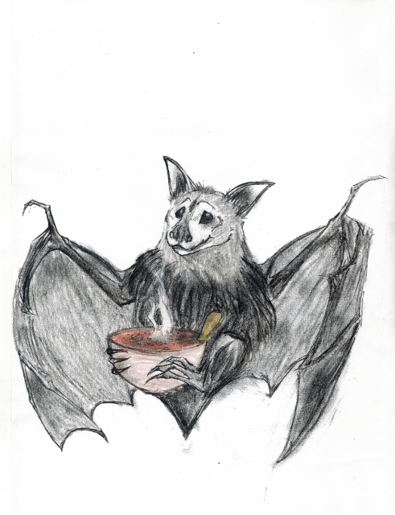

Short Stories
The Thankful Tree
Uploaded 11-24-2016
Sometimes life sucks. Remebering to be thankful can make you realize what's really worthwile in life.
Bat Soup
Uploaded 10-31-2016
Happy Halloween! Please enjoy my children's story Bat Soup!

The Dancers
Uploaded 9-15-2016
I thought of when I can see and elderly couple and just tell that they are in love. It's really rare and amazing. So please enjoy The Dancers.
The Gold Coin
Uploaded 7-26-2016
This story came to me while thinking about how money can be worth more or less depending on who holds it.
A Strawberry Day
Uploaded 7-4-2016
Inspiration can come from anywhere. I opened up a bag of frozen strawberries from Costco, and they were huge! So I have strawberries on the brain. Thus, "A Strawberry Day." Enjoy this quick little love story!
The Boy
Uploaded 6-26-2016
When I was a kid, I found a book in our home library called "Fifty Famous Fairy Tales" by Robert J. Lee and it became very influential in a lot of what I write. I like the simplicity of the stories, like the kind you can tell around a campfire. That's the kind of style I try to use in my short stories. Enjoy "The Boy."
The Adventures of Blanket Dog
Uploaded 6-14-2016
This story was inspired by my very own dog, Poquito. He is a Chihuahua/Mini-Pinshcer mix, but for simplicity in this story, he is a Chihuahua. And, as you can see in the picture, he LOVES blankets!

About
About the Author:
Emily Costner is a wife and mother of 4 (3 boys and 1 girl) who enjoys sewing, writing, and generally being creative. She enjoys writing fantasy-romance and children's stories. She loves her mountain home and 80's Fantasy Movies... and chocolate... lots of chocolate!
Katie Costner is Emily's sister-in-law, and aunt of the aforementioned 3 boys and 1 girl. She is a gifted artist enjoys fantasy, soccer, animals, and the outdoors, not to mention painting and drawing all of the above.
 About the Editor:
About the Editor:
Cassie Costner is Emily's sister-in-law, and aunt of the aforementioned 3 boys and 1 girl. She is a Web Content Creator and Editor who enjoys reading, writing, soccer, hiking, and the outdoors.
 About the Editor:
About the Editor:
Kelly Costner is Emily's husband, and father of the aforementioned 3 boys and 1 girl. He is an IT Analyst who enjoys hunting, fishing, music, languages, reading, and video games. He is also a web, game, and software developer.